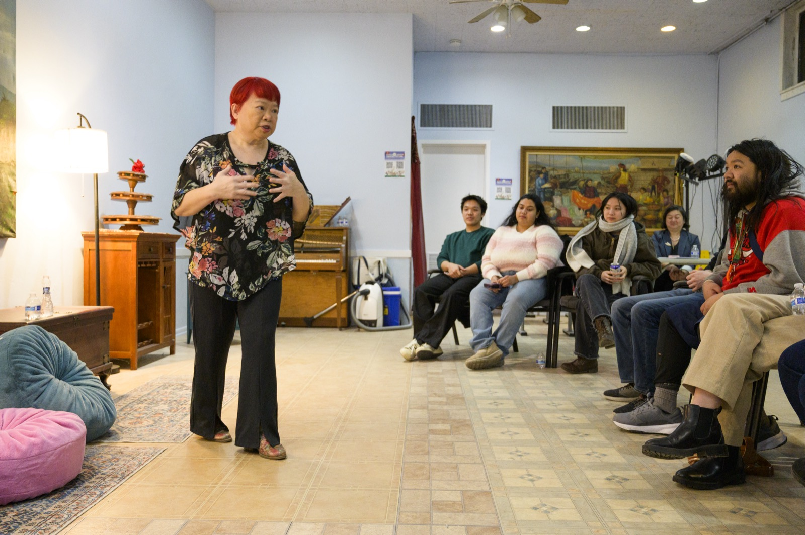
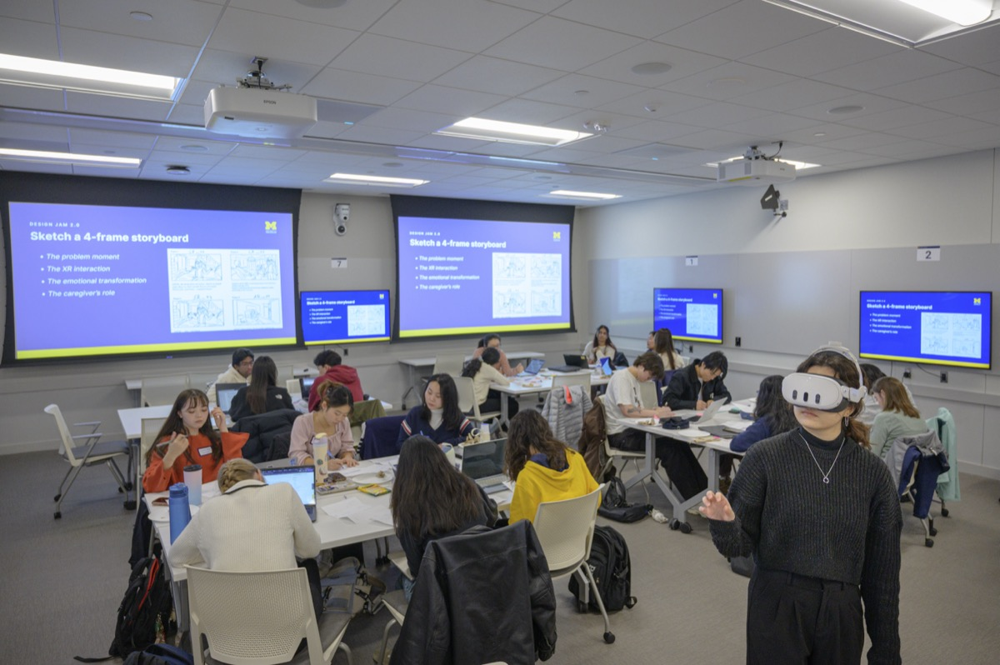

Campus Partner Resources
Find Specialized Support Across U-M
Engaged learning projects often require knowledge beyond a single course or team. University of Michigan partner organizations can help you prepare for community collaboration, make ethical design decisions, strengthen research, and communicate your findings.
Review each organization's focus before reaching out. When you contact a campus partner, explain your course, project stage, audience, and the specific support you need.

Ginsberg Center for Community Service and Learning
The Ginsberg Center supports respectful, reciprocal community-engaged learning in civic and nonprofit settings. Its guidance can help teams think carefully about power, community priorities, partnership practices, and ethical engagement.
Use this resource when you need to:
- Prepare to work with a community or nonprofit partner
- Examine assumptions about a community
- Build a reciprocal relationship rather than a one-sided service project
- Plan for responsible communication and project closure

Center for Socially Engaged Engineering and Design
The Center for Socially Engaged Engineering and Design provides learning opportunities related to socially engaged design, sociotechnical thinking, human-centered approaches, and community ethics in technical work.
Use this resource when you need to:
- Understand how a technical solution interacts with people and social systems
- Use human-centered methods to learn from users and stakeholders
- Consider ethical consequences before selecting a design direction
- Connect technical decisions to long-term community needs

University of Michigan Library Instructional Services
U-M Library Instruction and Course Support can help with source evaluation, research strategies, special collections, data visualization, poster presentations, and citation management.
Use this resource when you need to:
- Find trustworthy background information about a project topic
- Evaluate the quality and relevance of sources
- Plan a literature or landscape review
- Organize citations and give credit to original sources
- Present findings through a poster or data visualization
Choose the Right Partner
- Community relationships and reciprocal engagement
- Begin with the Ginsberg Center.
- Human-centered technical design and sociotechnical ethics
- Begin with C-SEED.
- Research, source evaluation, citations, or presenting findings
- Begin with U-M Library Instructional Services.
If you are unsure where to begin, contact the Engaged Learning Office and describe your project and the support you are seeking.